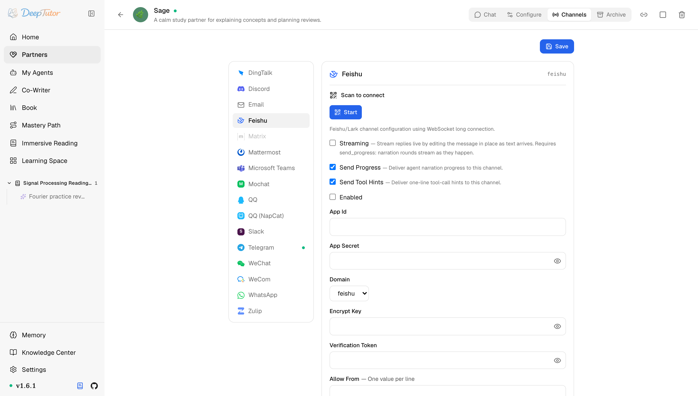

夥伴與管道飛書 / Lark
DeepTutor 接入飛書教學！掃描 QR Code 一次自動綁定，CardKit 串流打字太香了，飛書 Lark 雙版本通用！｜零度解說
為 Partner 設定飛書 / Lark 管道——開放平台建應用、WebSocket 長連線、CardKit 串流卡片。
原文連結：https://docs.deeptutor.info/zh-cn/partners/feishu/
如果你的公司在用飛書，那 DeepTutor 這個管道你一定要接。
feishu 管道透過官方 lark-oapi 開發工具包（SDK）的 WebSocket 長連線把 AI 學習夥伴（Partner）接到飛書（或國際版 Lark）自建應用上：連線由 DeepTutor 主動發起，不需要對外 IP、不需要網路鉤子（webhook）回呼、不需要反向代理。
國內飛書（open.feishu.cn）和國際版 Lark（open.larksuite.com）用的是同一個管道，可以說是在國內組織裡跑工作助手的首選。
這個管道還支援串流輸出（Streaming）：開關開啟後，回覆會以 CardKit 串流卡片的形式即時打字渲染，邊生成邊顯示，這個觀感是真的爽。

Partner 執行起來之後，先看卡片的即時狀態：它應該從 Connecting 進入 Connected；只有失敗狀態需要更多細節時，再去查日誌。
一、安裝依賴
飛書支援已包含在 Partners 可選元件（extras）裡，底層是官方 lark-oapi SDK，不需要額外安裝任何東西：
pip install -e ".[partners]"
# 或发布包支持 extras 时：
pip install "deeptutor[partners]"官方入口：
二、快速設定：掃描 QR Code 建立
管道卡片內建了憑據引導流程（onboarding），不需要手工複製憑據也能建立並綁定應用：
- 開啟 Partners -> 你的 partner -> Channels -> Feishu ，點選 Scan to connect 。
- 用負責管理該應用的飛書/Lark 帳號掃描 QR Code，也可以開啟頁面給出的授權連結。
- 狀態變成 Scan completed 後，點選 Apply 。
- DeepTutor 會儲存新應用的 App ID 與 App Secret，自動識別
feishu或lark，啟用管道，並把掃描 QR Code 使用者的 open id 加進 Allow From 。重新掃描 QR Code 並 Apply 會替換當前應用綁定，其餘管道設定會保留。 - 啟動 Partner；如果已經在執行，就 reload channels。
如果組織策略要求自行建立和審批應用，請使用下面的手動流程。
三、手動設定：在開放平台建立應用
- 開啟 飛書開放平台 （國際版用 Lark 開放平台 ），進入開發者後台，建立一個 自建應用 ，填好名稱、描述、圖示。
- 在 憑證與基礎資訊 頁複製 App ID （
cli_...）和 App Secret ，待會兒填進管道卡片（channel card）。 - 應用能力 -> 機器人 ：開通機器人能力，設定機器人的名稱和頭像。
- 事件與回呼 ：把訂閱方式切換為 長連線 （事件走 WebSocket 而不是 webhook），然後訂閱
im.message.receive_v1事件。 - 權限管理 ：開通訊息相關權限：至少
im:message（以機器人身份收發訊息）；想讓圖片、檔案、語音也能進來，再加im:resource。預設的確認表情會呼叫建立訊息 reaction 的 API，因此還要授予新增訊息 reaction 的權限。啟用 Streaming 時，還要授予 CardKit 建立卡片及更新卡片內容/設定的權限。 - 建立版本並發布。 自建應用走企業內發布加管理員審批。但是問題來了：版本不發布，機器人什麼都收不到，這是最常見的設定失誤。
如果你在平台上開啟了事件加密（事件與回呼裡的加密設定），記下 Encrypt Key 和 Verification Token，它們需要同步填進管道卡片。
四、設定管道卡片
開啟 Partners -> 你的 partner -> Channels -> Feishu。
| 欄位 | 怎麼填 |
|---|---|
| Streaming | 預設關閉。開啟後回覆用 CardKit 串流卡片即時打字渲染。依賴 Send Progress ：過程解說（narration）也會逐輪串流輸出。 |
| Send Progress | 測試時建議開啟。長任務會把過程解說即時發過來。 |
| Send Tool Hints | 除錯時建議開啟；不想讓使用者看到一行工具呼叫就關掉。 |
| Enabled | 準備啟動管道時再開啟。 |
| App Id | 憑證與基礎資訊頁的 App ID， cli_... 開頭。 |
| App Secret | 同頁的 App Secret。按 secret 儲存，儲存後會遮罩顯示。 |
| Domain | 國內飛書應用用預設的 feishu ；國際版 Lark tenant 要選 lark ，這樣 SDK 才會使用 open.larksuite.com 。掃描 QR Code 流程會自動填寫。 |
| Encrypt Key | 只有在平台開啟了事件加密時才需要填，否則留空。 |
| Verification Token | 平台的事件 Verification Token，用於事件簽章驗證。沒設定就留空。 |
| Allow From | 一行一個值。測試可填 * 表示開放；正式用換成 ou_... open id（發一條訊息後從 partner 日誌裡抄）。空列表會拒絕所有人。 |
| React Emoji | 機器人收到訊息後立刻回應的表情，相當於"已讀"確認。預設 THUMBSUP ；常用的還有 OK 、 EYES 、 DONE 、 OnIt 、 HEART 。 |
| Group Policy | mention （預設）：群裡只有被 @ 才回答。 open ：群裡每條訊息都回答。私聊永遠會回覆。 |
出站訊息格式由 DeepTutor 自動挑選：短的純文字直接發文字訊息，只帶連結的發富文字 post，含標題、程式碼塊、列表、表格的發互動卡片。飛書每張卡片只允許一個表格，多表格回覆會自動拆成幾張卡片。
五、儲存之後
- 點 Save ，把 Enabled 開啟。
- 啟動 partner（已在執行的話重新啟動，或在 Channels 面板上用 reload）。
- 用允許的帳號在飛書裡私聊機器人，發一條短訊息。
- 看 partner 日誌：能看到入站事件，並且你發的訊息幾乎立刻被加上 React Emoji 表情回應。
- 在日誌裡確認
ou_...sender id 之後，把 Allow From 裡的*換成真實 id。
如何確認健康
- 日誌出現
Feishu bot started with WebSocket long connection，且沒有反覆刷Feishu WebSocket error（掉線後管道每 5 秒自動重連）。 - 測試訊息立刻收到 React Emoji 回應，說明入站事件和出站 API 憑證都通了。
- 回覆正常送達；開了 Streaming 的話，能看到卡片即時打字，而不是最後一次性出一條。
常見問題
機器人什麼都收不到
三道門必須全開：應用版本已發布（不是草稿）、訂閱了 im.message.receive_v1 事件、訂閱方式是長連線。版本沒發布是最常見的原因，先查它。
收得到訊息但回覆失敗
多半是權限沒開。確認 im:message 已開通，收發媒體還要 im:resource，預設確認表情還需要新增訊息 reaction 的權限；啟用 Streaming 時也要檢查 CardKit 建立/更新權限。然後重新發布一個版本，權限變更只在發布後生效。具體 API 錯誤碼會打在 partner 日誌裡。
開啟加密後事件全部失敗
平台上配了 Encrypt Key，管道卡片裡就必須填同一個值（連同 Verification Token），反過來也一樣。在平台上輪換過任何一個值，都要更新卡片並重新啟動 partner。
Streaming 卡片不打字
Streaming 依賴 Send Progress，必須一起開。如果 CardKit 卡片建立失敗（日誌裡搜 Failed to create Feishu streaming card），管道會退回到回合結束後發一張普通卡片，回覆還在，只是沒有打字效果。
相關頁面
- Channel Matrix — 所有 channel 一覽
- DingTalk — 另一大國內辦公 IM，同樣免 webhook
部署過程遇到問題，歡迎在留言區留言，把報錯的完整日誌貼出來，我看到會回覆。